<title>Reactive Channels at Kilometre Scale</title>
<meta name="claude:viewport-fit-sides" content="cover">
<link rel="preconnect" href="https://fonts.googleapis.com">
<link rel="preconnect" href="https://fonts.gstatic.com" crossorigin>
<link href="https://fonts.googleapis.com/css2?family=Literata:opsz,wght@7..72,500;7..72,650&family=Public+Sans:wght@400;500;600&family=JetBrains+Mono:wght@400;500&display=swap" rel="stylesheet">
<style>
/* Layout: one reading column (~68ch) with wide figures breaking out to 1100px; each finding is a numbered part because the four parts are one causal sequence. */
:root{
  --bg:#f6f7f6; --surface:#ffffff; --ink:#15191c; --ink-2:#4b5560; --rule:#d9dedd;
  --flow:#1f5f8b; --rust:#c4472d; --hl:#e8f0f5; --warm:#f8ece7; --ok:#2f7a4f;
  --f-display:"Literata",Georgia,"Times New Roman",serif;
  --f-body:"Public Sans",system-ui,-apple-system,"Segoe UI",sans-serif;
  --f-mono:"JetBrains Mono",ui-monospace,Menlo,monospace;
}
@media (prefers-color-scheme: dark){:root:not([data-theme="light"]){
  --bg:#121618; --surface:#1a1f22; --ink:#e7ebec; --ink-2:#a9b3b9; --rule:#2e363b;
  --flow:#79b3dc; --rust:#ec8c72; --hl:#1b2a34; --warm:#33221d; --ok:#6cc18f; color-scheme:dark}}
:root[data-theme="dark"]{
  --bg:#121618; --surface:#1a1f22; --ink:#e7ebec; --ink-2:#a9b3b9; --rule:#2e363b;
  --flow:#79b3dc; --rust:#ec8c72; --hl:#1b2a34; --warm:#33221d; --ok:#6cc18f; color-scheme:dark}
*{box-sizing:border-box}
body{background:var(--bg);color:var(--ink);font:16px/1.62 var(--f-body);overflow-x:hidden;
  padding-left:max(16px,env(safe-area-inset-left,0px));padding-right:max(16px,env(safe-area-inset-right,0px))}
main{max-width:1100px;margin:0 auto;padding-block:40px 80px}
.col{max-width:68ch}
h1,h2,h3{font-family:var(--f-display);font-weight:650;line-height:1.18;text-wrap:balance;margin:0}
h1{font-size:clamp(2rem,5vw,2.9rem)}
h2{font-size:1.65rem;margin-top:56px;padding-top:18px;border-top:1px solid var(--rule);display:flex;gap:14px;align-items:baseline}
h2 .n{font-family:var(--f-mono);font-size:.95rem;color:var(--flow);font-weight:500}
h3{font-size:1.12rem;margin-top:22px}
p,ul,ol{margin:8px 0}li{margin:4px 0}
.meta{color:var(--ink-2);font-size:.9rem;font-family:var(--f-mono)}
.lede{font-size:1.14rem;max-width:62ch}
.plain{background:var(--hl);border-radius:8px;padding:12px 18px;margin:14px 0;max-width:68ch}
.plain .tag,.tech .tag{font-family:var(--f-mono);font-size:.72rem;letter-spacing:.08em;text-transform:uppercase;color:var(--flow);display:block;margin-bottom:2px}
.claim{font-family:var(--f-display);font-size:1.18rem;font-weight:500;max-width:62ch;margin:14px 0 6px}
.grid4{display:grid;grid-template-columns:repeat(auto-fit,minmax(230px,1fr));gap:14px;margin:18px 0}
.find{background:var(--surface);border:1px solid var(--rule);border-radius:8px;padding:14px 16px;min-width:0}
.find .k{font-family:var(--f-mono);font-size:.75rem;color:var(--ink-2)}
.find .big{font-family:var(--f-display);font-size:1.7rem;font-weight:650;color:var(--flow);line-height:1.1;margin:6px 0}
.find p{margin:0;font-size:.93rem}
figure{margin:18px 0;background:var(--surface);border:1px solid var(--rule);border-radius:8px;padding:12px}
figure img,figure video{display:block;max-width:100%;height:auto;margin:0 auto;background:#fff;border-radius:4px}
figcaption{color:var(--ink-2);font-size:.9rem;margin-top:8px;max-width:95ch}
.pair{display:grid;grid-template-columns:repeat(auto-fit,minmax(320px,1fr));gap:14px}
.pair figure{margin:0}
.src{color:var(--ink-2);font-size:.84rem;font-family:var(--f-mono);margin:4px 0 12px;overflow-wrap:anywhere}
.caveat{border-left:3px solid var(--rust);background:var(--surface);padding:6px 14px;margin:12px 0;max-width:68ch;font-size:.95rem}
.new{border-left:3px solid var(--ok);background:var(--surface);padding:6px 14px;margin:12px 0;max-width:68ch;font-size:.95rem}
.tablewrap{overflow-x:auto;background:var(--surface);border:1px solid var(--rule);border-radius:8px;margin:12px 0;max-width:100%}
table{border-collapse:collapse;width:100%;font-size:.9rem;font-variant-numeric:tabular-nums}
th,td{padding:7px 12px;text-align:right;border-bottom:1px solid var(--rule);white-space:nowrap}
th{font-weight:600;color:var(--ink-2);font-size:.8rem}
th:first-child,td:first-child,.l{text-align:left}
td.w{white-space:normal;min-width:16rem;text-align:left}
tr:last-child td{border-bottom:0}
code{font-family:var(--f-mono);font-size:.86em}
nav.toc{display:flex;flex-wrap:wrap;gap:6px 16px;font-size:.92rem;margin:16px 0}
a{color:var(--flow);overflow-wrap:anywhere}
a:focus-visible{outline:2px solid var(--flow);outline-offset:2px}
.status{display:inline-block;font-family:var(--f-mono);font-size:.72rem;padding:1px 8px;border-radius:999px;border:1px solid var(--rule);color:var(--ink-2);vertical-align:2px}
.status.run{border-color:var(--rust);color:var(--rust)}
@media (max-width:420px){main{padding-block:24px 60px}}
@media (prefers-reduced-motion:reduce){*{scroll-behavior:auto}}
</style>

<main>
<header class="col">
<p class="meta">BiGraFV · Forsmark FFM01 networks · 456 reactive runs · draft 8 November 2026</p>
<h1>Reactive Channels at Kilometre Scale</h1>
<p class="lede">What happens to flow when water dissolves the mineral filling a kilometre of fractured rock? We ran 456 reactive simulations on 117 networks of 1,587 to 14,658 fractures and found one sequence, one moving focus that relaxes behind it, one depth law, and a pre-run number that ranks breakthrough only roughly.</p>
<nav class="toc" aria-label="Sections"><a href="#short">In short</a><a href="#why">Why BiGraFV</a><a href="#setup">What we ran</a><a href="#stages">1 Stages</a><a href="#front">2 Moving focus</a><a href="#gain">3 Depth law</a><a href="#predict">4 Predictor</a><a href="#robust">Robustness</a><a href="#newness">New or known</a><a href="#limits">Limits</a><a href="#papers">Manuscripts</a><a href="#gaps">Gaps and runs</a><a href="#methods">Methods</a></nav>
</header>

<section id="short">
<h2>In short</h2>
<div class="plain"><span class="tag">In plain words</span>
<p>Water that dissolves gypsum out of fractures makes the fractures more open, so more water goes through them, and they dissolve faster. That feedback makes flow pile into a few paths. We found that in a kilometre-scale network it happens in a fixed order, that the pile-up travels with the dissolution front and then undoes itself once the gypsum runs out, that how strongly it piles up is set by one number (how much more open a fracture can become), and that a cheap measurement of the network before any reaction gives a rough, not precise, idea of how much gypsum must dissolve before the front reaches the far side.</p></div>
<div class="grid4">
<div class="find"><span class="k">1 · Stages</span><div class="big">87 / 90</div><p>runs follow the same order: open space decouples from flow, recouples, focuses and breaks through, then relaxes.</p></div>
<div class="find"><span class="k">2 · Moving focus</span><div class="big">0.03 → 0.50</div><p>dissolved fraction at which each 100 m stretch focuses, inlet to outlet; every stretch then returns to within 1–2 % of its start (at ×100 gain too; at ×1000 in the median of 9 networks, needing about five times the water).</p></div>
<div class="find"><span class="k">3 · Depth law</span><div class="big">0.78 → 0.15</div><p>channel depth from ×5.5 to ×1000 attainable permeability gain; coupled chemistry sits on the same curve (median gap 0.021); holds at σ 0.</p></div>
<div class="find"><span class="k">4 · Predictor</span><div class="big">ρ 0.76–0.83</div><p>early tracer arrival ranks the gypsum dissolved at breakthrough; out of sample R² 0.51–0.62. The blind test failed, so it is a rough guide, not a predictor.</p></div>
</div>
</section>

<section id="why">
<h2>Why BiGraFV</h2>
<div class="col">
<p>Resolving every fracture of a kilometre-scale network as a mesh costs millions of cells per run; published reactive network studies stop at 10 m (meshed DFN) to 25 m and about 526 fractures (graph models; Hyman et al. 2026). BiGraFV represents each fracture as one control volume and each intersection as a connection, so PFLOTRAN solves full reactive transport (real gypsum and calcite kinetics, mineral volume, porosity and permeability feedback) on 1,587–14,658 fractures in hours. That is what makes the comparisons below possible: the same network run with different chemistries, permeability laws, rates, lengths and densities, 456 times, with the flow re-solved at every saved state.</p>
<p>Every result here is a comparison of BiGraFV against BiGraFV: we change one thing and keep the rest fixed. A meshed DFN would be another model with its own assumptions; it is a check we have built and parked, not the reference.</p>
</div>
</section>

<section id="setup">
<h2>What we ran</h2>
<div class="pair">
<figure>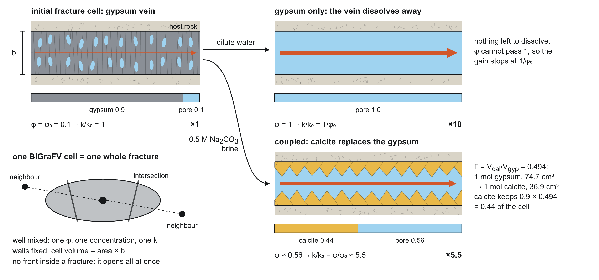<figcaption>One BiGraFV cell is a whole fracture, well mixed, starting 90 % gypsum. With k ∝ φ (n = 1) full dissolution gives ×10; calcite replacement leaves porosity 0.56 and ×5.5.</figcaption></figure>
<div class="col" style="min-width:0">
<ul>
<li><strong>Networks.</strong> SKB Forsmark FFM01 fracture statistics, 1000 × 250 × 250 m (and 2000 × 500 × 250 m), intensity P32 ×4/×6/×8/×16, transmissivity spread σ 0/0.5/1, 5 seeds each.</li>
<li><strong>Flow.</strong> One network pore volume per year, fixed rate.</li>
<li><strong>Chemistries.</strong> Gypsum-only (dilute water) and coupled gypsum–calcite (0.5 M carbonate brine; calcite replaces gypsum and takes 49.4 % of its volume).</li>
<li><strong>Permeability.</strong> k = k<sub>0</sub>(φ/φ<sub>0</sub>)<sup>n</sup>; n = 1 in the main runs, n = 0.5–8 in the law tests.</li>
<li><strong>Clock.</strong> d, the fraction of the network's gypsum dissolved. Every stage event is timed on d.</li>
<li><strong>Depth.</strong> Network PR<sub>V</sub> minimum over its start; lower means flow is more concentrated.</li>
</ul>
</div>
</div>
</section>

<section id="stages">
<h2><span class="n">1</span>The front moves through four stages</h2>
<p class="claim">Open pore space decouples from flow, recouples, focuses and breaks through, then the network relaxes.</p>
<div class="plain"><span class="tag">In plain words</span>
<p>First the gypsum near the inlet dissolves, but the water still has to squeeze through filled fractures further on, so opening space does not yet change where the water goes. Then the water finds the opened fractures and crowds into them. That crowding is strongest just before the dissolving front reaches the far side. Once the gypsum along those paths is gone, neighbouring paths catch up and the water spreads out again.</p></div>
<figure>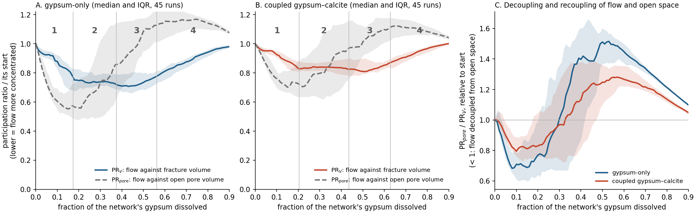<figcaption><strong>Figure 1.</strong> A–B: flow against fracture volume (PR<sub>V</sub>, solid) and against open pore volume (PR<sub>pore</sub>, dashed), median and interquartile range of 45 runs per chemistry (P32 ×4–×8). Vertical lines: median pore-volume minimum, PR<sub>V</sub> minimum and breakthrough; numbers mark the stages. C: PR<sub>pore</sub>/PR<sub>V</sub> relative to its start. Below 1, flow is decoupled from open space; above 1, it follows the open space more closely than at the start.</figcaption></figure>
<div class="col">
<span class="tag" style="font-family:var(--f-mono);font-size:.72rem;letter-spacing:.08em;text-transform:uppercase;color:var(--flow)">Technical</span>
<ul>
<li>Event medians (d): pore-volume minimum 0.17 (gypsum-only) / 0.20 (coupled); PR<sub>V</sub> minimum 0.37 / 0.44; breakthrough 0.56 / 0.63.</li>
<li>Order (capacity time ≤ 2): pore-volume minimum ≤ PR<sub>V</sub> minimum ≤ breakthrough in 87 of 90 runs at 1 km and 83 of 90 at 2 km; in 14 of 90 (1 km) PR<sub>V</sub> minimum and breakthrough fall on the same saved state.</li>
<li>Decoupling: PR<sub>pore</sub>/PR<sub>V</sub> falls below its start in 45 of 45 runs per chemistry (median curve minimum 0.68 / 0.80 at d ≈ 0.1), crosses back through 1 at d ≈ 0.3 and peaks at 1.52 / 1.28 near d = 0.5.</li>
<li>Relaxation: at the last saved state (median d 0.93 / 0.98) PR<sub>V</sub> is 0.995 / 1.01 of its start.</li>
<li>Same order at P32 ×16 (26 of 30 runs) and the PR<sub>V</sub> minimum precedes breakthrough at 2 km in 90 of 90.</li>
</ul>
</div>
<div class="pair">
<figure><video controls muted playsinline preload="none" poster="img/stages_gyponly.png" src="img/movie_gyponly.mp4"></video><figcaption>Movie: two slices through the example network (P32 ×6, σ 1, seed 1, gypsum-only) through all four stages. Blue: open and flowing; light blue: open, little flow; orange: flow through still-filled rock.</figcaption></figure>
<figure>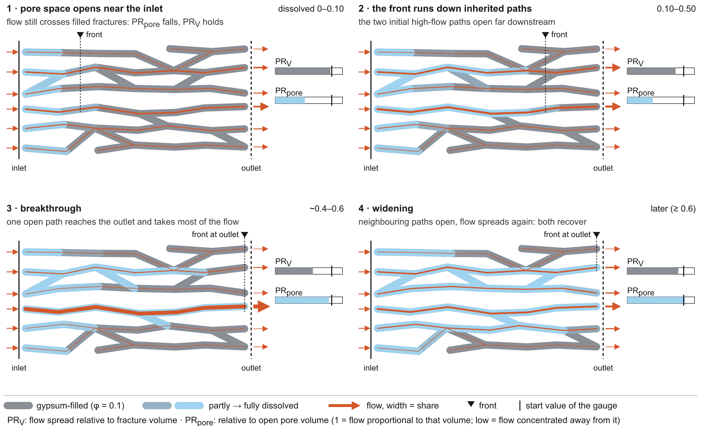<figcaption>The four stages as a cartoon.</figcaption></figure>
</div>
<p class="src">Backing: phase1/phase1_mechanism.csv (analyze_phase1_mechanism.py), phase1/stage_events_clocks.csv, scale2km/scale_runs.csv (compare_scale.py); figure story/make_story_figures.py.</p>
<div class="caveat">The coupled PR<sub>V</sub> curve is flat between d ≈ 0.2 and 0.55, so its minimum is weakly defined. With one cell per fracture, stage 1 is about whole fractures, not fronts inside a fracture.</div>
</section>

<section id="front">
<h2><span class="n">2</span>The focus moves with the front and relaxes behind it</h2>
<p class="claim">Each 100 m stretch focuses once, when the front passes it, and then returns to where it started. The outlet stretch focuses most.</p>
<div class="plain"><span class="tag">In plain words</span>
<p>Cut the network into ten slices along the flow. Each slice gets crowded with flow when the dissolving front arrives, and un-crowded again after the front has passed and the gypsum there is gone. So the crowding is a travelling wave, not a permanent channel. The slice next to the outlet gets the most crowded, because it is the last place where the opened channel still has to push through filled rock.</p></div>
<figure><video controls muted playsinline loop preload="metadata" poster="img/focus_front_mid.png" src="img/focus_front.mp4"></video><figcaption>Animation: PR<sub>V</sub> of each 100 m stretch relative to its start (bars; short bar = flow concentrated) as the dissolved fraction grows, median of 45 networks per chemistry; below, the network PR<sub>V</sub> with a moving marker. Watch the short bar travel from inlet to outlet while the stretches behind it grow back to 1.</figcaption></figure>
<figure>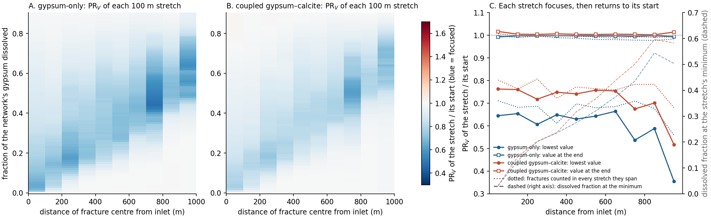<figcaption><strong>Figure 2.</strong> A–B: median PR<sub>V</sub> of each stretch over its start (blue = focused), 45 runs per chemistry (P32 ×4–×8). The blue band climbing from bottom left to upper right is the front. C: per stretch, the lowest value (circles), the value at the end (squares) and the dissolved fraction at the lowest value (dashed, right axis), 60 runs per chemistry; dotted lines count each fracture in every stretch it spans.</figcaption></figure>
<div class="col">
<span class="tag" style="font-family:var(--f-mono);font-size:.72rem;letter-spacing:.08em;text-transform:uppercase;color:var(--flow)">Technical</span>
<ul>
<li>The dissolved fraction at each stretch's minimum rises from 0.03 at the inlet to 0.50 (gypsum-only) and 0.58 (coupled) at the outlet.</li>
<li>Outlet stretch minimum 0.36 / 0.52 of its start, against 0.54–0.66 and 0.67–0.76 upstream.</li>
<li>Every stretch ends within 0.8 % (gypsum-only) and 1.7 % (coupled) of its start; counting fractures in every stretch they span, within 2.3 % / 1.3 %, and the minimum still moves inlet to outlet (rank correlation 0.94 / 0.95).</li>
<li>At high gain (n = 2 and 3, 9 networks) the front still moves and each stretch focuses much harder (outlet stretch 0.01 of its start at n = 3). Run A continued these runs to capacity time 8 (Figure 5): at n = 2 (×100) relaxation completes (every stretch 97–99 % recovered, network PR<sub>V</sub> 0.99 of its start, 9 of 9 networks); at n = 3 (×1000) it has not completed (stretches 74–89 % recovered, network PR<sub>V</sub> 0.84, a quarter of the gypsum left) but is still rising, 0.56 → 0.85 between capacity time 2 and 8. Run A2 continued the n = 3 gypsum-only runs to capacity time 20: in the median the relaxation then completes (pre-set rule passed: every stretch median ≥ 0.935 recovered, network PR<sub>V</sub> 0.95 of its start, 85 % of the gypsum gone); the median network curve crosses 0.9 at capacity time 10.3, against about 2 at n = 2. Per network it is less uniform: 8 of 9 networks reach 0.9, but only 3 of 9 recover every stretch, and one (p4 seed 2) is clearly not done (0.87, its last three stretches 39–54 % recovered).</li>
<li>The gain sets how deep the channel goes; from d 0.5 on, the pace of relaxation follows how much gypsum is gone: below d 0.5 n = 3 dips much deeper at the same dissolved fraction (0.21 against 0.44 at d 0.2), but from d 0.5 to 0.81 n = 2 and n = 3 sit within 0.03 (pre-set rule, run A2; largest gap 0.028, a thin margin; n = 3 slightly lower above d 0.7, over 7 of 9 networks). Why a ×1000 channel takes longer in time: the pre-set bypass test (at matched capacity time) failed, because the ×1000 runs still hold more gypsum at any given time. Compared at the same dissolved fraction (exploratory), the ×1000 network dissolves its remaining gypsum 3–4× more slowly (Figure 5D; on matched networks 3.4× at d 0.5 rising to 7.7× at d 0.8, where saved states are coarse) and its flow sees 5–8× less of it, on every network that reaches each d (9 of 9 at d 0.5 and 0.6, 7 of 7 at 0.7 and 0.8): consistent with the channel bypassing the gypsum left, though the index is correlational. Reaching d 0.8 takes capacity time 8.5 against 2.1. The lag opens right after capacity time 0.25, when the ×1000 channel forms. Coupled runs relax fully at both n, ending slightly above their start (up to 1.07).</li>
<li>The width of the focused zone does not predict when the whole network is most focused (pre-set test failed, rank correlation 0.27–0.50). The network minimum comes from flow shifting inside the initial channel upstream of the outlet, before the outlet stretch focuses.</li>
</ul>
</div>
<figure>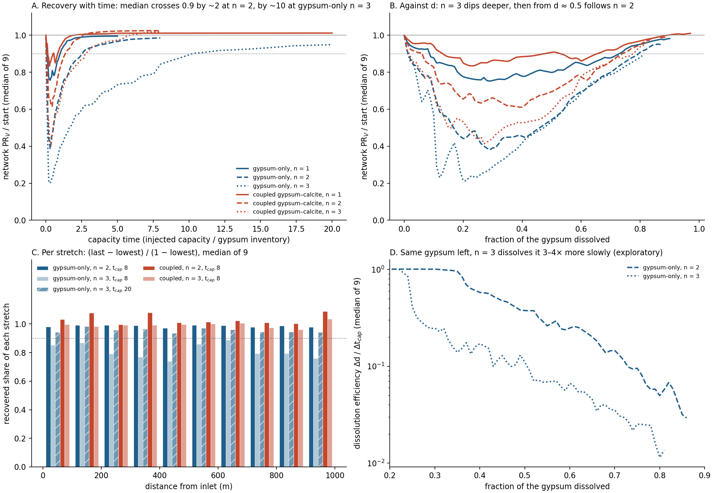<figcaption><strong>Figure 5.</strong> Late-time relaxation at high gain (runs A and A2; 9 networks, σ 1). A: network PR<sub>V</sub> over its start against capacity time; n = 1 from Phase 1 (to capacity time 5), n = 2 and coupled n = 3 to capacity time 8, gypsum-only n = 3 to 20 (run A2). B: the same against the dissolved fraction (medians where at least 6 of 9 networks reach d); n = 3 dips deeper, then from d ≈ 0.5 the n = 2 and n = 3 curves nearly coincide. C: per 100 m stretch, the share of its lowest value recovered (median of 9) at capacity time 8, and for gypsum-only n = 3 also at 20 (hatched); dotted: the pre-set 0.9 line; medians hide per-network spread (p4 seed 2 stays below 0.6 in its last three stretches). D: gypsum-only dissolution efficiency (gypsum dissolved per unit of injected capacity) against the dissolved fraction, n = 2 against n = 3; exploratory, not pre-registered.</figcaption></figure>
<p class="src">Backing: phase1/xbin_channelization.csv, xbin_bin_minima.csv, xbin_spanning_minima.csv, front_occupancy_tests.csv, prv_decomposition_tests.csv, ceilsweep/xbin_highgain.csv, gapfill/gapA_stretch.csv, gapA_network.csv (analyze_gapfill.py, rule gapfill/GAPFILL.md A); animation story/make_story_animation.py.</p>
<div class="new">A downstream-moving focusing front is published (Hyman et al. 2026, Fig. 11), but there focusing behind the front holds at its maximum, because the wall rock never runs out. The relaxation behind the front, set by the finite soluble fill, is what we did not find reported.</div>
</section>

<section id="gain">
<h2><span class="n">3</span>Channel depth follows the attainable permeability gain</h2>
<p class="claim">How deep the channel gets follows C, the permeability gain of a fully reacted fracture. The chemistry acts through C. A higher C narrows the channel within the paths that were already there.</p>
<div class="plain"><span class="tag">In plain words</span>
<p>A dissolved fracture can only get so much more permeable. If it can gain ten times, the flow crowds a little; if it can gain a thousand times, the flow crowds hard into a few fractures. Calcite matters only because it refills part of the space and so lowers that maximum. Put both chemistries on the same scale of "how much more permeable can a fracture get" and they line up on one curve. The uncertain physics of how permeability grows with porosity does not leave the answer open: it just tells you where on the curve you are.</p></div>
<figure>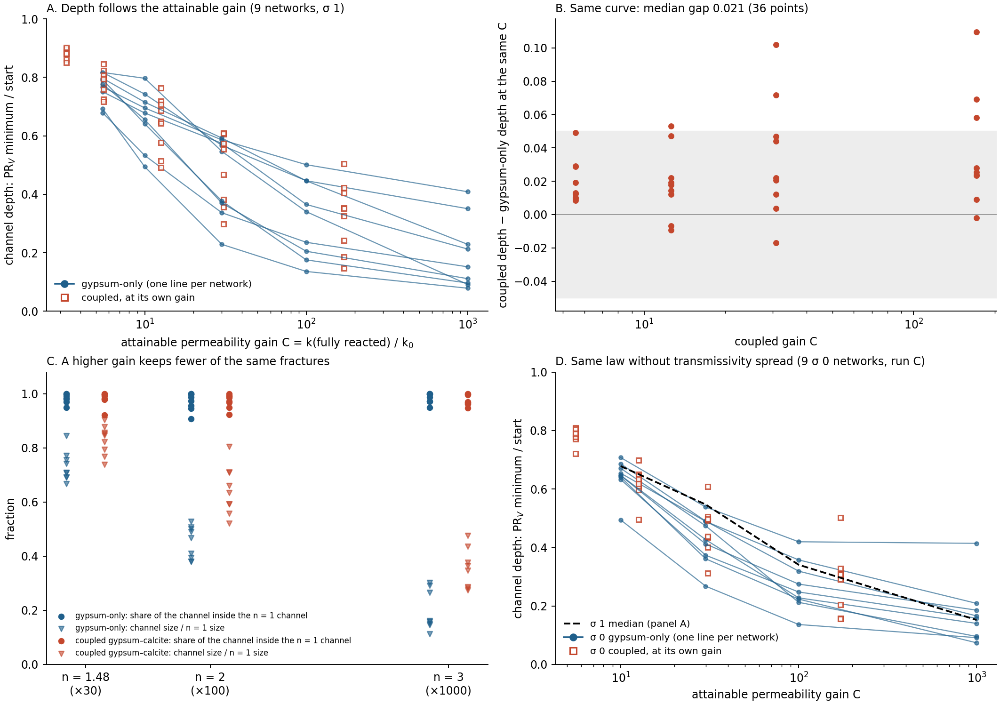<figcaption><strong>Figure 3.</strong> A: depth against C, one line per network (gypsum-only), coupled runs as squares at their own C (9 networks, P32 ×4–×8, σ 1). B: coupled minus gypsum-only depth at the same C, same network; grey band ±0.05. C: for n = 1.48, 2, 3, the share of the channel that is inside the n = 1 channel (circles) and the channel size relative to n = 1 (triangles). D: the same sweep on the same 9 geometries without transmissivity spread (σ 0, run C), with the σ 1 median dashed.</figcaption></figure>
<div class="tablewrap"><table>
<thead><tr><th class="l">Gypsum-only C</th><th>×5.5</th><th>×10</th><th>×30</th><th>×100</th><th>×1000</th></tr></thead>
<tbody><tr><td class="l">depth</td><td>0.78</td><td>0.68</td><td>0.55</td><td>0.34</td><td>0.15</td></tr>
<tr><td class="l">breakthrough (d)</td><td>0.65</td><td>0.58</td><td>0.49</td><td>0.40</td><td>0.27</td></tr>
<tr><td class="l">depth at σ 0 (run C)</td><td>—</td><td>0.65</td><td>0.43</td><td>0.25</td><td>0.16</td></tr></tbody></table></div>
<div class="tablewrap"><table>
<thead><tr><th class="l">Coupled C</th><th>×3.3</th><th>×5.6</th><th>×12.6</th><th>×30.8</th><th>×171</th></tr></thead>
<tbody><tr><td class="l">depth</td><td>0.88</td><td>0.79</td><td>0.65</td><td>0.55</td><td>0.35</td></tr></tbody></table></div>
<div class="col">
<span class="tag" style="font-family:var(--f-mono);font-size:.72rem;letter-spacing:.08em;text-transform:uppercase;color:var(--flow)">Technical</span>
<ul>
<li>Depth falls with C on 9 of 9 networks (pre-set rule R1), about 0.25 per decade, flattening at high C (9 of 9). Medians over 9 networks.</li>
<li>Coupled against the same network's gypsum-only curve at the same C: median |difference| 0.021 over 36 points (rule R2 passed at 0.03); coupled slightly shallower (6 of 36 beyond 0.05, all positive). Against the permeability gain actually reached, 0.014.</li>
<li>C, not n: matched points compare different exponents at the same C (coupled n = 2 at ×30.8 against gypsum-only n = 1.48 at ×30) and agree. At a fixed ×10, the law's shape (n = 0.5 to 8) moves depth by ±0.04 (one network, below).</li>
<li>91–100 % of the high-n channel lies inside the n = 1 channel; it holds 0.71 / 0.47 / 0.16 (gypsum-only) of the n = 1 fractures at n = 1.48 / 2 / 3. Inheritance stays 0.95–0.99.</li>
<li>σ 0 (run C: the same 9 geometries without transmissivity spread; pre-set rule passed): depth falls with C on 9 of 9; coupled within a median 0.029 of the gypsum-only curve (27 points; σ 1 on the same laws: 0.022), again slightly shallower (median +0.027; 7 of 27 beyond +0.05, none below −0.05). The coupled n = 1 points fall below the σ 0 gypsum-only range and are not compared. Without transmissivity spread the channel is deeper at intermediate gain (×30: 0.43 against 0.55) and the same at ×10 and ×1000.</li>
<li>The gain also makes events earlier: breakthrough 0.65 → 0.27, PR<sub>V</sub> minimum 0.43 → 0.22 (×5.5 → ×1000). At n = 3 stages 1 and 2 merge in 5 of 8 gypsum-only networks.</li>
</ul>
</div>
<div class="pair">
<figure><figcaption>Same ×10 gain, four shapes (n = 0.5, 1, 2, 8; one network): depth 0.72, 0.68, 0.66, 0.64. Purple: n = 3, ×1000.</figcaption></figure>
<figure>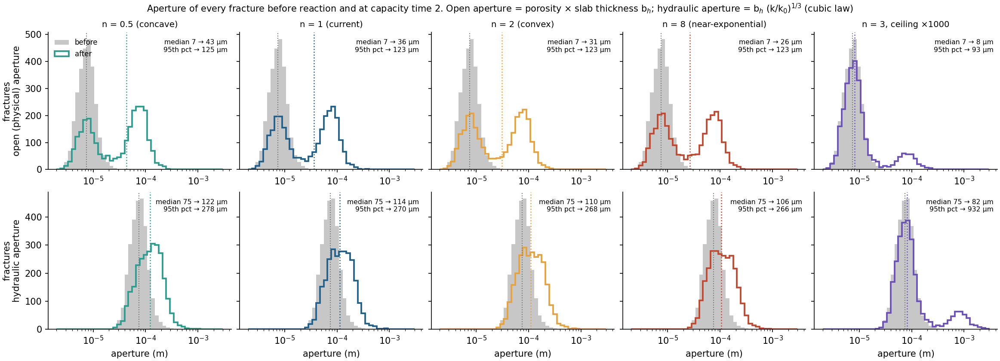<figcaption>Apertures before and after. With any ×10 law the hydraulic aperture can at most double (median 75 → 106–122 µm); with n = 3, 13 % of fractures open to about 1 mm.</figcaption></figure>
</div>
<p class="src">Backing: ceilsweep/ceilsweep_runs.csv, ceilsweep_residuals.csv, ceilsweep_tests.csv (analyze_ceilsweep.py, rules ceilsweep/CEILING_SWEEP.md), ceilsweep/channel_overlap.csv (channel_overlap.py), phase1/kphi_e0/kphi_e0_summary.csv, gapfill/gapC_runs.csv, gapC_residuals.csv (analyze_gapfill.py, rule gapfill/GAPFILL.md C).</p>
<div class="caveat">At high C the channel bypasses the rest of the network: by capacity time 2 only 0.49 of the gypsum is dissolved at n = 3 (0.85 at n = 1). C is nominal (realized 0.56–0.70 of it at n = 3). The coupled chemistry sits slightly shallower than gypsum-only at both σ (median +0.02 to +0.03), on the edge of the pre-set 0.03. With inheritance near 1, any smaller channel would sit inside the n = 1 channel, so the nesting has no null model.</div>
</section>

<section id="predict">
<h2><span class="n">4</span>One number known before the run ranks breakthrough, roughly</h2>
<p class="claim">The time for the first 10 % of a tracer pulse to cross the unreacted network, in mean residence times, ranks how much gypsum must dissolve before breakthrough. On networks it has not seen it explains about half the variation; the pre-set blind test failed.</p>
<div class="plain"><span class="tag">In plain words</span>
<p>Before any reaction, push a pulse of dye through the network and time how fast the first tenth comes out. Networks where water races through a few fast paths break through early (little gypsum dissolved); networks where the fast water is slow break through late. On the networks we fitted it on, this looked like a tight straight line. On 12 new networks it was much looser: it gets the order roughly right but cannot pin the amount down better than to about 0.06–0.07 of the gypsum (median error).</p></div>
<figure>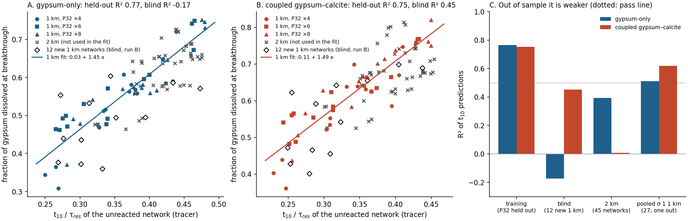<figcaption><strong>Figure 4.</strong> A–B: dissolved fraction at breakthrough against t<sub>10</sub>/τ<sub>res</sub> of the unreacted network, 1 km (P32 ×4–×8, 45 networks per chemistry) with the 1 km fit; grey crosses are 45 new 2 km networks not used in the fit; open diamonds are 12 new 1 km networks run after the line was frozen (blind, run B). C: R² of t<sub>10</sub> predictions: training with each P32 level held out, the blind networks and the 2 km networks against the frozen line, and all 27 σ 1 1 km networks with one network left out at a time.</figcaption></figure>
<div class="col">
<span class="tag" style="font-family:var(--f-mono);font-size:.72rem;letter-spacing:.08em;text-transform:uppercase;color:var(--flow)">Technical</span>
<ul>
<li>d<sub>bt</sub> = 0.03 + 1.45 t<sub>10</sub>/τ<sub>res</sub> (gypsum-only), 0.11 + 1.49 t<sub>10</sub>/τ<sub>res</sub> (coupled), fitted on 45 networks per chemistry (15 geometries × 3 σ). In training, with each P32 level held out: R² 0.77 / 0.75, rank correlation 0.92 / 0.92. The largest fracture's flow share gives 0.62 / 0.55 on the same runs.</li>
<li>The single fastest inventory path (min Σ V/q) does not predict it (rank correlation 0.17–0.25): breakthrough follows the flow-weighted fast part of the network, not one path.</li>
<li>2 km (not used in the fit): the relation carries over in size (median bias −0.023 / −0.030; median error 0.045 / 0.076), but ranks the 2 km networks only weakly (rank correlation 0.60 / 0.43; R² 0.39 / 0.01), where breakthroughs span a narrower range (SD 0.07 against 0.11).</li>
<li><strong>Blind test (run B), failed.</strong> 12 new 1 km networks (P32 ×4/×8, σ 1), frozen line: R² −0.17 / 0.45, rank correlation 0.51 / 0.72, median bias −0.043 / −0.034 (pre-set pass: R² ≥ 0.5, ρ ≥ 0.7, |bias| ≤ 0.03). Not the σ mix: on the σ 1 training networks alone the line gives R² 0.80 / 0.76, but in-sample. Same builder and domain; the blind set has P32 ×4 and ×8 only. The new networks break through earlier than predicted at the same t<sub>10</sub>; the likeliest reading is an optimistic training fit plus network-to-network variance.</li>
<li>Honest estimate, all 27 σ 1 1 km networks with one left out at a time: R² 0.51 / 0.62, rank correlation 0.76 / 0.83. Other arrival percentiles do no better (t<sub>16</sub> 0.52 / 0.64). The training R² of 0.77 was optimistic: the percentile was chosen on those 15 geometries.</li>
<li><strong>Why it missed (diagnosis after the result, Figure S4).</strong> Not the measurement (saved states are 0.05–0.06 of the gypsum apart in every set; interpolating breakthrough gives blind R² 0.04 / 0.45), not the probe (recovery 0.998–0.999, same t<sub>10</sub> spread), and not network structure (no correlation with 8 pre-run statistics, |ρ| ≤ 0.16; blind and training networks indistinguishable). The blind residual shift is not significant (p 0.37 / 0.32). Across 20,000 random 15 / 12 splits of the 27 σ 1 networks the test R² has median 0.49 / 0.60 and falls below 0.5 in 52 % / 30 % of splits; the actual split sits at the 6th / 26th percentile. With 12 test networks, passing at 0.5 was close to a coin flip.</li>
<li><strong>2 km is weaker, not just narrower.</strong> The narrower 2 km t<sub>10</sub> spread alone would still give R² ≈ 0.65; at 2 km the slope is shallower (1.23 / 0.90 against 1.45 / 1.49) and the scatter larger, so early arrival carries less information over a longer path. Why is open.</li>
</ul>
</div>
<div class="pair">
<figure><video controls muted playsinline preload="none" poster="img/pulse_btc_only_gyponly.png" src="img/pulse_gyponly.mp4"></video><figcaption>Movie: the reaction is paused at each stage and a tracer pulse runs through the frozen network (example network, gypsum-only). The same kind of pulse on the unreacted network gives t<sub>10</sub>.</figcaption></figure>
<figure>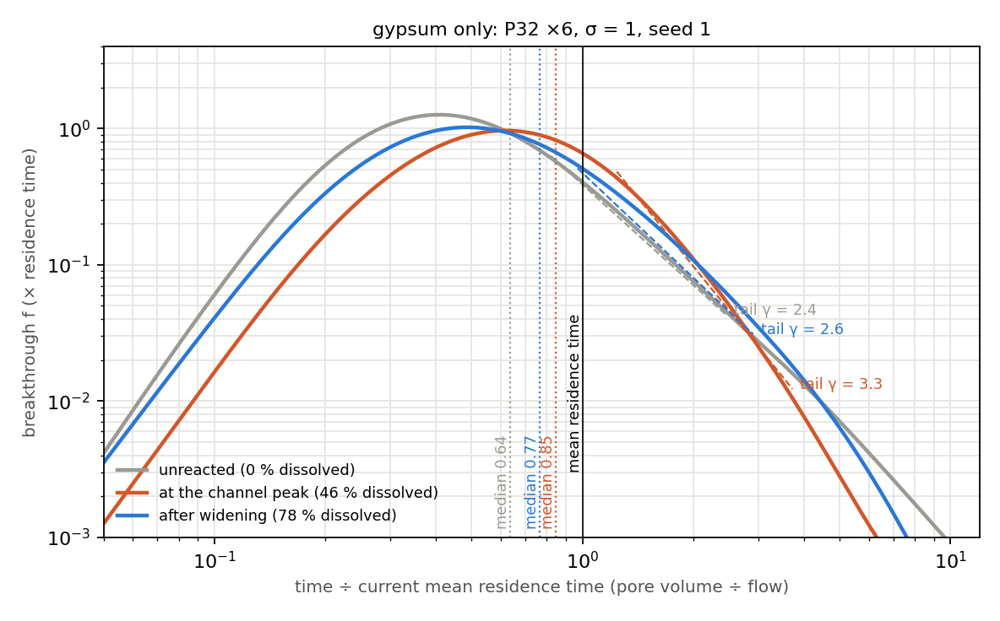<figcaption>Transport narrows while the channel forms and recovers after: median arrival 0.81 → 0.91 → 0.86 of the residence time, tail exponent 3.4 → 4.2 → 3.4 (gypsum-only, 60 networks).</figcaption></figure>
</div>
<figure>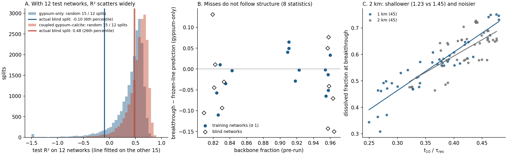<figcaption><strong>Figure S4.</strong> Why the blind test missed. A: test R² over 20,000 random 15 / 12 splits of the 27 σ 1 1 km networks, with the actual blind split marked. B: blind and training residuals against the network backbone fraction (one of 8 pre-run statistics; none correlates). C: gypsum-only breakthrough against t<sub>10</sub> at 1 km and 2 km with each set’s own fit.</figcaption></figure>
<p class="src">Backing: phase1/early_arrival_predictor.csv, early_arrival_predictor_fit.csv (early_arrival_predictor.py), phase1/fastpath_predictor_fit.csv, phase1/breakthrough_predictor_summary.csv, gapfill/gapB_predictor.csv, gapfill_tests.csv (analyze_gapfill.py, rule gapfill/GAPFILL.md B); diagnosis gapfill/diag_*.csv, diag_summary.json (diagnose_predictor.py).</p>
<div class="caveat">With R² about 0.5–0.6 out of sample, this is a supporting result (fast flow paths set when the front arrives), not a headline predictor. t<sub>10</sub> needs a tracer pulse on the unreacted network (cheap, but a simulation). The tracer is an Eulerian pulse with numerical dispersion.</div>
</section>

<section id="robust">
<h2>Robustness</h2>
<div class="pair">
<figure><figcaption>2 km (45 networks, 90 runs): the same dip and recovery; inheritance 0.96–1.00; breakthrough needs more gypsum dissolved (0.56 → 0.64 gypsum-only).</figcaption></figure>
<figure>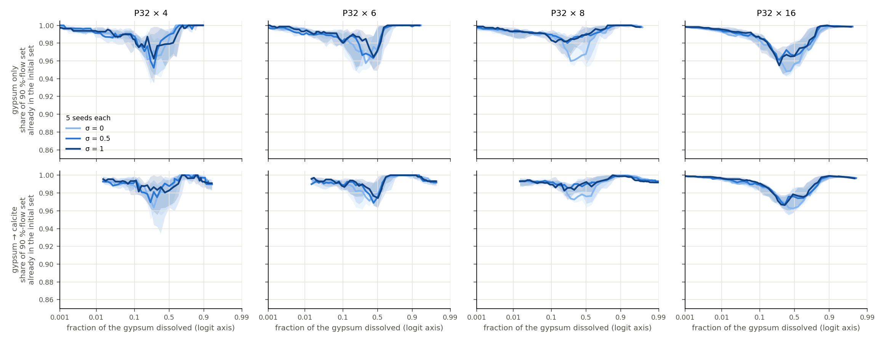<figcaption>Inheritance: 92–100 % of the peak channel was in the initial 90 %-flow set, in every run.</figcaption></figure>
</div>
<div class="col"><ul>
<li><strong>Rate.</strong> 0.1 to 10 pore volumes per year (3 networks per chemistry): stage timing moves by at most 0.003 in d and depth by at most 0.014. The runs are at local equilibrium.</li>
<li><strong>Density.</strong> P32 ×16 (7,849–8,229 fractures): same order in 26 of 30, inheritance 0.97, same depth law.</li>
<li><strong>Binning.</strong> The moving focus and its relaxation hold when fractures are counted in every stretch they span.</li>
<li><strong>Chemistry at low carbonate.</strong> At 2 mM carbonate the coupled depth matches gypsum-only and the channel is not rerouted.</li>
<li><strong>Not robust, dropped.</strong> An apparent early network peak on sparse 2 km networks at σ 1 vanished at σ 0 on the same geometries.</li>
</ul></div>
<p class="src">Backing: scale2km/scale_runs.csv, SCALE_TEST.md; phase1/phase3_rate.csv; phase1/phase1_channel_identity.csv; report Forsmark Reactive Channels 5f, 6.4, 8.8, 8.10.</p>
</section>

<section id="newness">
<h2>New or known</h2>
<div class="tablewrap"><table>
<thead><tr><th class="l">Result</th><th class="l">Status</th><th class="l">Closest published work</th></tr></thead>
<tbody>
<tr><td class="w">Channels follow the initial flow paths</td><td class="l">known, now at 1–2 km</td><td class="w">Hyman et al. 2026; Szawełło et al. 2026</td></tr>
<tr><td class="w">A focusing front moves downstream</td><td class="l">known</td><td class="w">Hyman et al. 2026, Fig. 11</td></tr>
<tr><td class="w">Focus relaxes behind the front (finite fill), at a pace set by the gypsum left, not by the gain</td><td class="l">not found</td><td class="w">Hyman 2026: focusing holds behind the front; Budek et al. 2026: freezes when walls armour</td></tr>
<tr><td class="w">Full four-stage sequence with decoupling–recoupling of flow and open space</td><td class="l">not found in 3D networks</td><td class="w">re-spreading after breakthrough in 2D karst nets (Perne et al. 2014)</td></tr>
<tr><td class="w">Calcite replacement limits the gain</td><td class="l">known</td><td class="w">Budek et al. 2026 (Γ)</td></tr>
<tr><td class="w">One depth(C) curve for both chemistries, at σ 0 and σ 1; narrowing within the initial channel</td><td class="l">not found</td><td class="w">—</td></tr>
<tr><td class="w">Early tracer arrival ranks the inventory dissolved at breakthrough (moderate: out-of-sample R² 0.5–0.6)</td><td class="l">not found</td><td class="w">—</td></tr>
<tr><td class="w">Reactive network simulations at km scale with thousands of fractures</td><td class="l">not found</td><td class="w">largest found: 25 m, ~526 fractures (Hyman et al. 2026)</td></tr>
</tbody></table></div>
<p class="src">Literature notes: lit/lit_staged_channelization.md (with the Hyman 2026 Fig. 11 addendum), lit/lit_channel_depth.md, lit/lit_kphi_relations.md. A final literature check before submission is still to do.</p>
</section>

<section id="limits">
<h2>Limits</h2>
<div class="col"><ul>
<li><strong>One cell per fracture.</strong> No fronts or wormholes inside a fracture and no intersection throats. The literature says this biases channels shallower and later, so the depths here are conservative.</li>
<li><strong>Permeability law.</strong> Unknown for these veins; part 3 turns it into a parameter (C) instead of a hidden assumption.</li>
<li><strong>Inputs.</strong> FFM01 200–400 m geometry with the 0–200 m transmissivity law; P32 scaled ×4–×16 to percolate across 1 km.</li>
<li><strong>Statistics.</strong> σ variants share geometry, so independent networks are 15 per scale; per-geometry counts are used where it matters.</li>
<li><strong>Tracer metrics.</strong> Eulerian pulses with numerical dispersion; compare states with each other, not with particle tracking.</li>
</ul></div>
</section>

<section id="papers">
<h2>Toward manuscripts</h2>
<div class="col">
<h3>Paper 1: Transient reactive channels in finite-fill fracture networks</h3>
<p>The dynamics. Figures: (1) the four stages and the decoupling–recoupling of flow and open space; (2) the focus that moves with the front and relaxes behind it (with the animation as supplementary video); (3) depth against attainable gain, chemistries on one curve; (4) late-time relaxation at high gain (Figure 5). Early tracer arrival goes in as a supporting result with its blind test. Supplement: 2 km, ×16, rate, binning, σ 0, the failed tests (front occupancy, fastest path, sparse early peak, the blind predictor test).</p>
<h3>Paper 2 (optional): Channel depth is set by the attainable permeability gain</h3>
<p>With σ 0 (run C) and the late-time runs (run A) in, part 3 can stand alone: the depth(C) curve at two transmissivity spreads, the C-versus-n separation, nested narrowing, recovery paced by the gypsum left, and what it means for choosing a permeability law. Otherwise it is Figure 3 of paper 1.</p>
<h3>Paper 3 (later): BiGraFV at kilometre scale</h3>
<p>The method and its checks (multiport correction, outflow-face fix, cost against meshed DFN), with the parked DFN comparison on the 500 m network if a reviewer asks for it.</p>
</div>
</section>

<section id="gaps">
<h2>Gap-filling runs: results <span class="status">done 8 Nov 19:14</span></h2>
<p class="col">123 runs, all finished cleanly: A–C (114 runs) Saturday 7 November 11:18–22:39 on 7 slots; A2 (9 runs) Sunday 8 November 09:30–19:14. Every rule was fixed before its runs started (gapfill/GAPFILL.md); the verdicts below follow the rules as written.</p>
<div class="tablewrap"><table>
<thead><tr><th class="l">Run</th><th class="l">Question</th><th class="l">Rule</th><th class="l">Result</th><th class="l">Verdict</th></tr></thead>
<tbody>
<tr><td class="l">A</td><td class="w">Does relaxation complete at high gain? (n = 2, 3; 9 networks; to capacity time 8; 36 runs)</td><td class="w">every stretch median recovered ≥ 0.9 and network PR<sub>V</sub> ≥ 0.9 of start (gypsum-only, n = 2 and 3)</td><td class="w">n = 2: stretches 0.97–0.99, network 0.99. n = 3: stretches 0.74–0.89, network 0.84 and rising, d = 0.74</td><td class="w">n = 2 met; n = 3 not met by capacity time 8 (still recovering)</td></tr>
<tr><td class="l">A2</td><td class="w">Does the ×1000 relaxation complete given more water, and is it paced by the gypsum left? (gypsum-only n = 3 to capacity time 20; 9 runs)</td><td class="w">(1) rule A at the last state; (2) n = 3 within 0.03 of n = 2 at matched d from 0.5 on; (3) bypass: lower efficiency and lower bypass index on ≥ 7 of 9 at matched capacity time 2–8</td><td class="w">(1) stretch medians ≥ 0.935, network 0.95 (8 of 9 ≥ 0.9; 3 of 9 with every stretch ≥ 0.9), median curve crosses 0.9 at capacity time 10.3; (2) largest gap 0.028 over d 0.50–0.81; (3) lower index 8 of 9, lower efficiency 3 of 9</td><td class="w">(1) passed on medians; (2) passed, thin margin; (3) not supported as set (inventory-confounded); supported at matched d, exploratory</td></tr>
<tr><td class="l">B</td><td class="w">Does the t<sub>10</sub> line hold on 12 new 1 km networks? (24 runs)</td><td class="w">frozen line: R² ≥ 0.5, ρ ≥ 0.7, |median bias| ≤ 0.03</td><td class="w">gypsum-only R² −0.17, ρ 0.51, bias −0.043; coupled R² 0.45, ρ 0.72, bias −0.034</td><td class="w">failed (both chemistries)</td></tr>
<tr><td class="l">C</td><td class="w">Is the depth law specific to σ 1? (σ 0, n = 1.48 / 2 / 3; 54 runs)</td><td class="w">depth falls with C on ≥ 7 of 9; coupled within a median |0.03|</td><td class="w">9 of 9 falling; coupled median |gap| 0.029 (median +0.027)</td><td class="w">passed (the chemistry match narrowly)</td></tr>
</tbody></table></div>
<div class="col">
<h3>What changed in the story</h3>
<ul>
<li>Part 2 is stronger: the relaxation completes at ×100 gain and, in the median, at ×1000 (one network of nine not), and from d 0.5 its pace is set by the gypsum left (Figure 5; both pre-set A2 rules passed). The ×1000 channel needs about five times the water; at matched d its flow sees less of the gypsum left, consistent with bypass (exploratory, after the pre-set bypass test failed).</li>
<li>Part 3 is stronger: the depth law and the single chemistry curve hold without transmissivity spread.</li>
<li>Part 4 is weaker: early arrival ranks breakthrough (pooled ρ 0.76 / 0.83), but explains only about half the variation out of sample (R² 0.51 / 0.62). It moves from a headline to a supporting result.</li>
</ul>
<h3>Remaining gaps (no runs planned)</h3>
<ul>
<li>Done 8 Nov: why the blind test missed (sampling variability around a moderate relation; no measurement, probe or structural cause) and why 2 km ranks weakly (shallower, noisier relation), Figure S4. A better one-number predictor would need many more networks and a new pre-registered blind set.</li>
<li>Done 8 Nov: n = 3 relaxation past capacity time 8 (run A2, above).</li>
<li>A final literature check of the "not found" claims.</li>
<li>Parked, ready if needed: DFN comparison on the 500 m network (criteria locked in dfn_validation/sm500_compare.py) and the fixed-width length series (lenseries/; its 1 km cells are now run as run B).</li>
</ul>
</div>
</section>

<section id="methods">
<h2>Methods and definitions</h2>
<div class="tablewrap"><table>
<thead><tr><th class="l">Quantity</th><th class="l">Definition</th></tr></thead>
<tbody>
<tr><td class="l">d</td><td class="w">fraction of the network's fracture-cell gypsum dissolved (from the VTK states)</td></tr>
<tr><td class="l">PR<sub>V</sub></td><td class="w">(Σ Q)² / Σ (Q²/w), w = fracture volume share, Q = fracture throughflow from flow re-solved on the frozen permeability; 1 when flow is proportional to volume</td></tr>
<tr><td class="l">PR<sub>pore</sub></td><td class="w">the same with w = open pore volume share</td></tr>
<tr><td class="l">depth</td><td class="w">min PR<sub>V</sub> / PR<sub>V</sub> at the start, within capacity time 2 where stated</td></tr>
<tr><td class="l">breakthrough</td><td class="w">first state at which the flow-weighted dissolved fraction of fractures in the last 100 m reaches 0.5</td></tr>
<tr><td class="l">inheritance</td><td class="w">share of the smallest 90 %-flow set that was in the initial 90 %-flow set</td></tr>
<tr><td class="l">C</td><td class="w">k of a fully reacted fracture over k<sub>0</sub>: (φ<sub>end</sub>/φ<sub>0</sub>)<sup>n</sup>, φ<sub>end</sub> = 1 (gypsum-only) or 1 − 0.9 Γ = 0.555 (coupled)</td></tr>
<tr><td class="l">t<sub>10</sub>/τ<sub>res</sub></td><td class="w">time for 10 % of a 0.1 τ<sub>res</sub> tracer pulse to leave the unreacted network, over its mean residence time</td></tr>
<tr><td class="l">capacity time</td><td class="w">injected volume × saturation capacity / network gypsum inventory</td></tr>
</tbody></table></div>
<p class="src">Code and data: github.com/cr-sutton/BiGraFV_reactive_channelization (alpha_study/forsmark_reactive). Technical text with every number's source: story/STORY.md (reviewed 7 Nov). Full working report: Forsmark Reactive Channels.</p>
</section>
</main>
